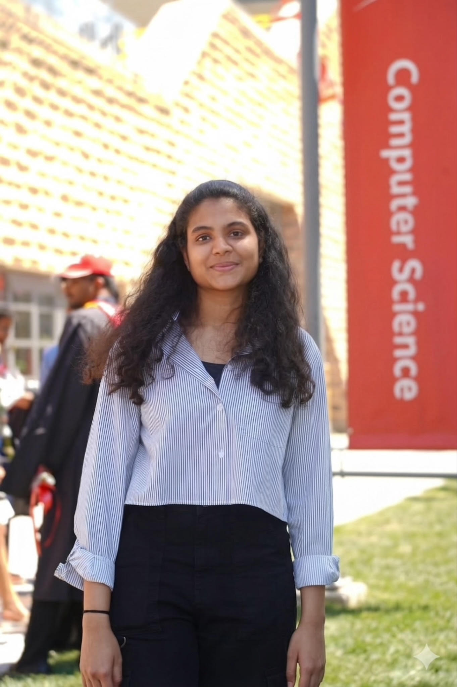
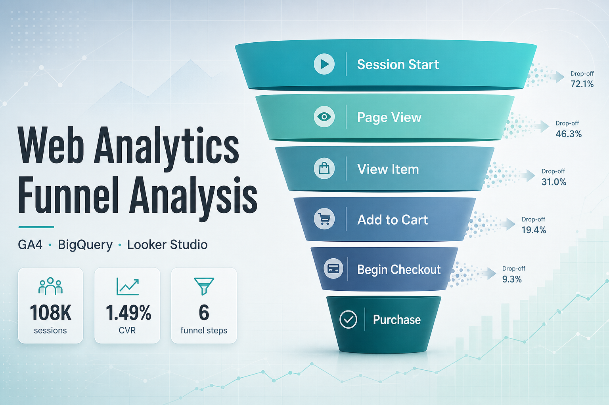
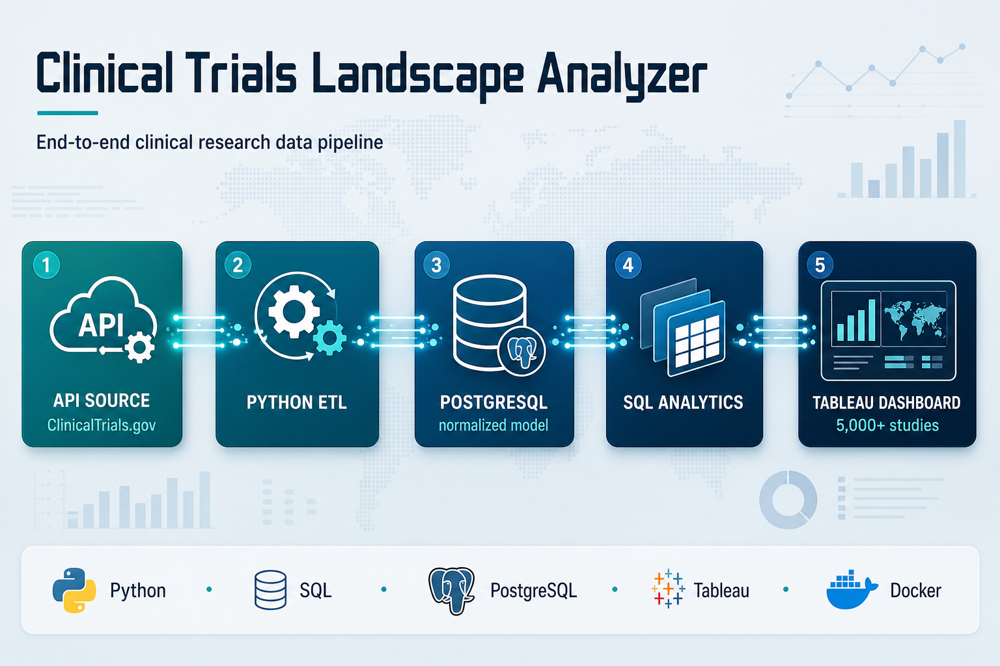
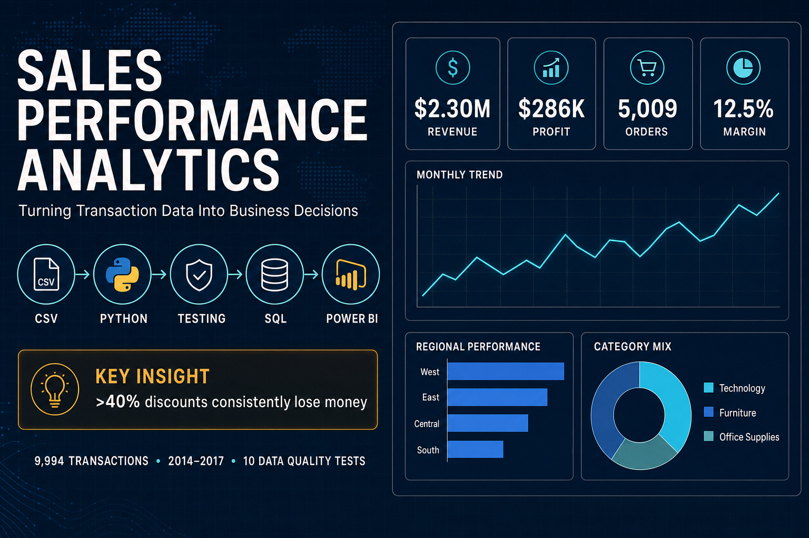
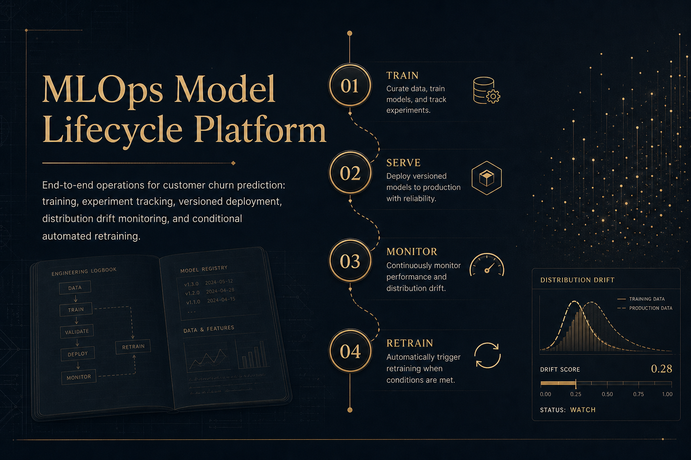
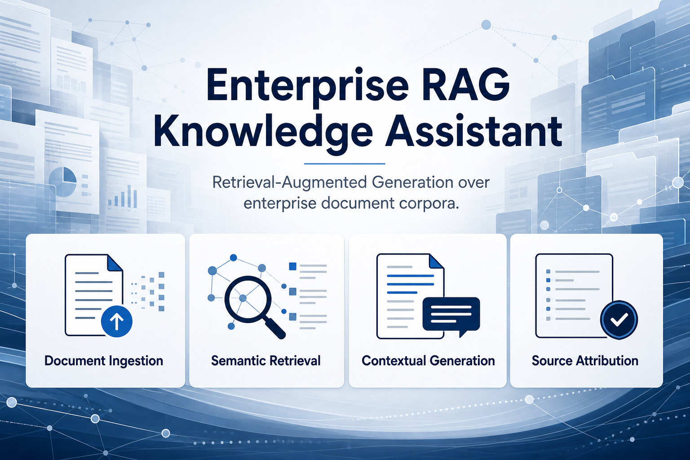
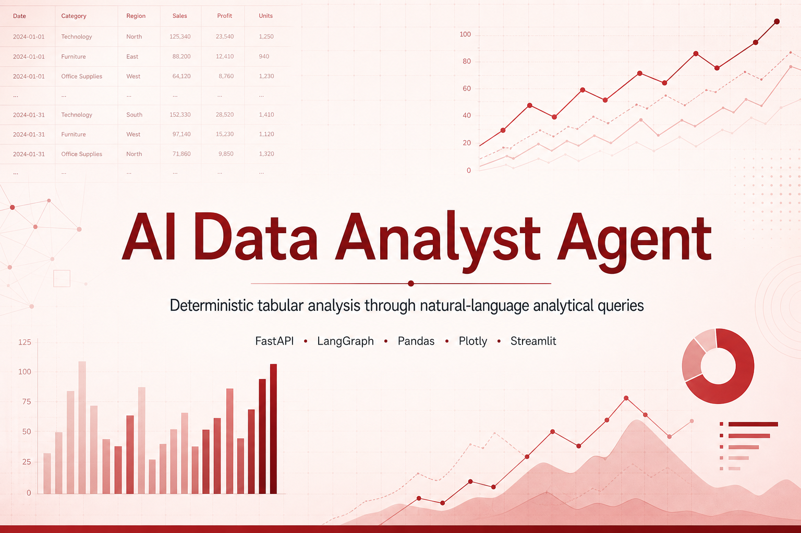
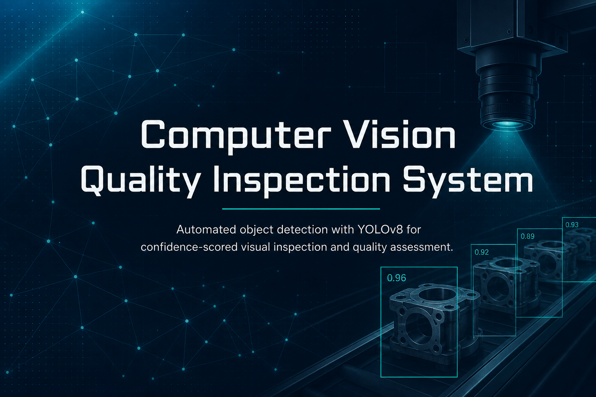
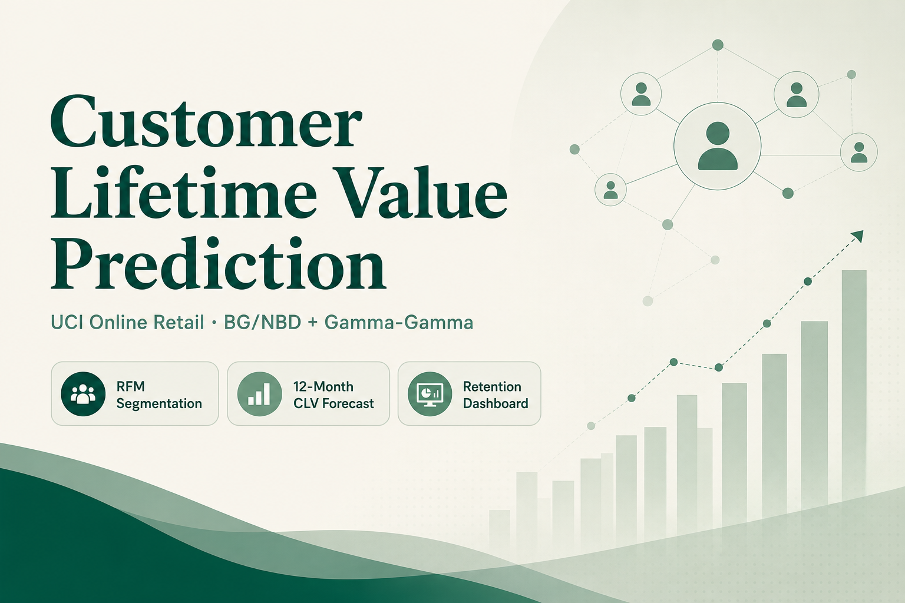
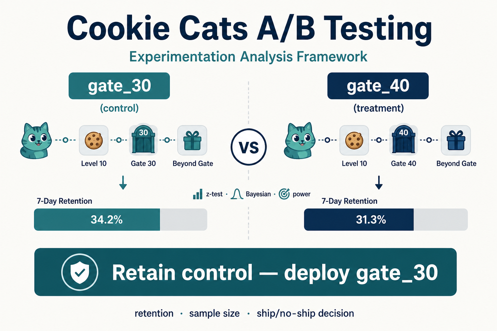

Hello, I'm Krishna Sathvika Ganni.
|
I work with data, structured or not, and build the systems that turn it into real value.
Turning data into direction. ✨

Skills
- Programming Languages: Python, SQL, PL/SQL, R
- Data Analysis & Manipulation: Pandas, NumPy, Exploratory Data Analysis (EDA), Feature Engineering, RFM Analysis, Statistical Modeling
- SQL & Databases: PostgreSQL, SQLite, Google BigQuery, Oracle (PL/SQL), CTEs, Window Functions (LAG, FIRST_VALUE), FILTER Clauses, PERCENTILE_CONT, UNNEST (Nested/Semi-Structured Data), Query Optimization
- Data Engineering & Pipelines: ETL/ELT Pipeline Development, REST API Integration, Data Cleaning & Validation, Data Pipeline Automation, Change Data Capture (CDC), Slowly Changing Dimensions (SCD Type 2), Record Hashing, Data Versioning & Audit Trails, Apache Airflow (Workflow Orchestration, DAGs), Big Data Concepts
- Machine Learning: Scikit-learn, Supervised Learning (Regression, Classification), Model Training & Evaluation, K-Means Clustering, Ensemble Methods (Gradient Boosting, LightGBM), Probabilistic Modeling (BG/NBD, Gamma-Gamma)
- Deep Learning & Computer Vision: PyTorch, YOLOv8, OpenCV, Object Detection, Image Classification, Model Inference
- Time Series & Forecasting: ARIMA, Prophet, LightGBM, statsmodels, Trend Forecasting, Model Benchmarking (MAE, RMSE, MAPE)
- Statistics & Experimentation: A/B Testing, Hypothesis Testing (Z-test, Chi-Square, Welch T-test, Mann-Whitney U), Power & Sample-Size Analysis, Bayesian Inference, Monte Carlo Simulation, Confidence/Credible Intervals
- Generative AI & LLM Engineering: LangChain, LangGraph, Retrieval-Augmented Generation (RAG), Prompt Engineering, Vector Databases (ChromaDB), Embeddings (FastEmbed), Google Gemini API, Agentic Workflow Orchestration
- MLOps & Model Lifecycle: MLflow (Experiment Tracking & Model Registry), Model Versioning, Data Drift Detection (Evidently), Automated Retraining Pipelines, Model Monitoring, Model Deployment
- Backend & APIs: FastAPI, REST API Development, Streamlit
- Data Visualization & BI: Tableau, Power BI, DAX, Looker Studio, Plotly, Chart.js, Dashboard Development, KPI Design
- Testing & Code Quality: pytest, Unit Testing, Automated Data Validation, Test Coverage Enforcement, flake8 (Linting)
- DevOps & Infrastructure: Docker, Docker Compose, Git, GitHub Actions (CI/CD)
Projects

Web Analytics Funnel Analysis

Clinical Trials Landscape Analyzer

End-to-End Sales Performance Dashboard

MLOps Model Lifecycle Platform

Enterprise RAG Knowledge Assistant

AI Data Analyst Agent

Computer Vision Quality Inspection System

Customer Lifetime Value (CLV) Prediction
PJM Hourly Energy Demand Forecasting

A/B Testing and Experimentation Analysis Framework
Project Name 11
Project Name 12
Experience
ML/AI Research Assistant
Oct 2025 - PresentNew Jersey Institute of Technology (NJIT) | Newark, NJ
Overview
Working as a research assistant on applied AI/ML projects spanning power grid resilience and healthcare, contributing across the research lifecycle - from dataset preparation and modeling to literature review, explainability, and publication.
Contributions
- Improved AI-based storm damage risk prediction models for power grid resilience using TensorFlow and PyTorch, achieving a 15% increase in model accuracy through dataset preparation, optimization, and image augmentation techniques applied to automatic inspection of electrical infrastructure.
- Supported Smart Health AI research initiatives across breast cancer, Parkinson's, Alzheimer's, glioma, and healthcare cost prediction, conducting literature reviews, preparing datasets, and exploring explainable AI (XAI) approaches to improve model interpretability.
- Co-authored a peer-reviewed IEEE Xplore publication on machine learning for storm-related energy transmission safeguarding, with the associated research poster recognized with 3rd Place - Best Poster at the 2025 NJIT Future Energy Transmission Conference.
Publication
Z. Yu, K.S. Ganni, J.A. Mehta, P. Pong, J. Li, and C. Liu, "Machine Learning and AI for Optimizing and Safeguarding Energy Transmission in Storms by Automatic Inspection of Electrical Wires," IEEE Xplore, 2025.
View on IEEE Xplore